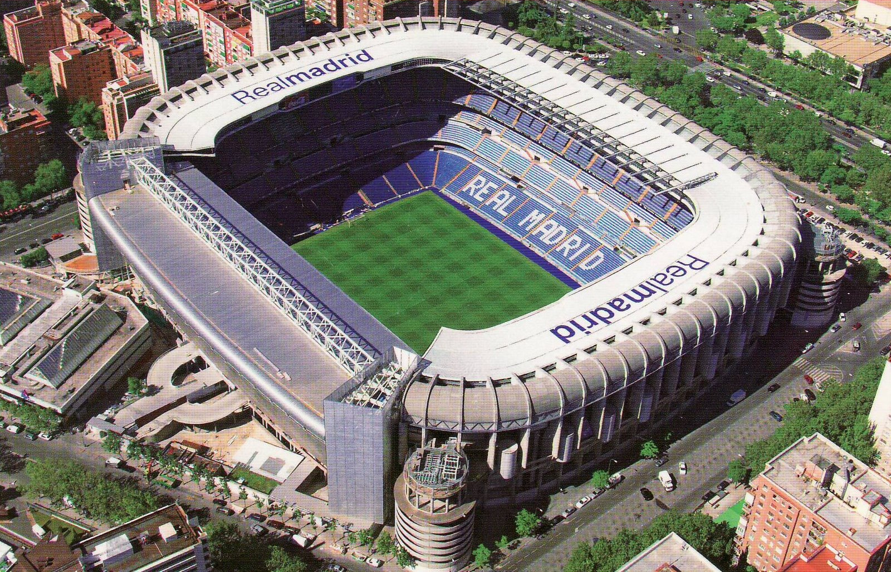

Estadio Santiago Bernabéu, kortweg Bernabéu, is het stadion van Real Madrid, in Madrid. Sinds de laatste aanpassingen in 2005 heeft het stadion een capaciteit van 81.044 toeschouwers. In oktober 1944 werd gestart met de bouw van het stadion. Op 14 december 1947 werd het stadion ingehuldigd, toen nog onder de naam Nuevo Estadio Chamartin naar het oude stadion van Real Madrid. Op 4 januari 1955 kreeg het stadion de huidige naam ter ere van clubpresident Santiago Bernabéu. Het stadion heeft door de jaren heen een aantal verbouwingen/renovaties ondergaan. De laatste grondige renovatie dateert van 1982, destijds voor het WK voetbal van 1982 in Spanje. In 2014 legde Real Madrid plannen op tafel om het stadion om te vormen naar een moderne voetbaltempel. Deze plannen werden aanvankelijk door het stadsbestuur afgekeurd. Na aanpassingen kreeg de club in oktober 2016 uiteindelijk een toelating om het stadion te verbouwen. De voetbaltempel krijgt onder meer een verschuifbaar dak. Het aantal zitjes blijft behouden.
